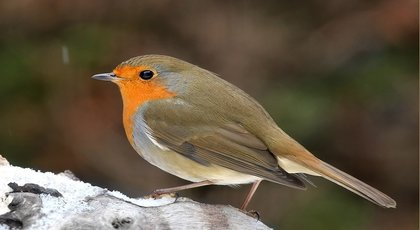

Halk Şarkısındaki Kuş

Mevsim kış. Toprağın üstündeki kar örtüsü, kaya gövdelerinden koparılmış tek parça mermere benziyor.
Hava aydınlık, duru, rüzgâr sert, iki ağızlı bir kılıç gibi, ağaçlar ak mercanlara dönmüş, çiçek açmış badem dalları sanki.
Burada hava yüksek Alplerde olduğu gibi taze. Geceler kuzey ışığında, sayısız, parıltılı yıldızlar altında öyle muhteşem ki!
Fırtına geliyor, bulutlar geçiyor gerçekten de gökyüzünden, yere kuğu tüyleri serpiyorlar. Lapa lapa yağan kar, kasırgalar yaparak havada dönüyor,
çukur yolları, evleri örtüyor. Ama biz sıcak odamızda, gürül gürül yanan sobamızın karşısında eski zamanlardan konuşuyor, bir masal dinliyoruz.
Açık denizin ortasında bir Hun mezarı vardı. Bu mezarın üstünde, gece yarısı olunca orada yatan kahramanın hayaleti çıkıp otururdu.
Eskiden bir kraldı bu. Başının çevresinde altın bir hâle parıldar, saçları rüzgârda dalgalanırdı. Zırhlar içindeydi.
Başını kederle göğsüne eğer, acısından mutsuz bir ruh gibi, derin derin içini
çekerdi.
Bir gün bir gemi geçti önünden. Tayfalar demir atıp karaya çıktılar. Aralarında askerleri savaşa teşvik
etmek için destanlar söyleyen bir ozan da vardı. Bir kral kılığına girerek sordu ona: "Neden matem tutuyor, azap çekiyorsun?"
Ölü cevap verdi: "Benim başarılarımı kimse şarkılarla övmedi. Hepsi öldüler, sulara gömüldüler. Şarkılar onları memleketlerin ötesine,
insanların kalplerinde taşımadı. Onun için rahatım, huzurum yok!"
"Kahramanlıklarını, yaptığı büyük işleri anlatmaya başladı. Bunları çağdaşları görmüş,
ama aralarında bir ozan bulunmadığı için şarkılarla övmemişti.
Bunun üzerine askerleri savaşa teşvik etmek için destanlar söyleyen ozan eline harpını aldı.
Şarkılar söyleyerek kahramanı, gençliğindeki cesaretini, olgunluk yaşındaki kuvvetini, başardığı işlerin büyüklüğünü övdü. Bu sırada ölünün yüzü,
ay ışığında bir bulutun kenarları nasıl parlarsa öyle parlıyordu. Hayalet mesut, neşeli, yavaş yavaş kuzey aydınlığı gibi solan
ışıkların, parıltıların ortasında ayağa kalktı. Yazısız mezar taşlarıyla yeşil bir tepeden başka hiçbir şey görünmüyordu. Yalnız tellerden çıkan
son nağme ile birlikte küçük bir kuş, çalınan harptan kopmuş da kanatlanmış gibi bu taşların üstünden uçuyordu. Ötücü kuşların en güzeliydi bu.
Ardıç kuşunun yankılarla dolu ahengiyle, insan kalbinin canla dolu ahengiyle, muhacir kuşların duyduğu vatan ahengiyle şakıyordu. Kayalar, vadiler
üstünden, ormanlar, tarlalar üstünden uçuyordu. Bu hiçbir zaman ölmeyen halk şarkılarının kuşuydu.
Biz onun şarkısını duyuyoruz. Şimdi burada, odamızda
onu duyuyoruz. Dışarıda ak arılar yığın yığın uçuşurken, fırtınalar uğuldayarak eserken, bu kış akşamında onu duyuyoruz. Kuş bize yalnız
kahramanların yaptığı savaşları değil, tatlı, içli, sayısız, zengin aşk şarkılarını da şakıyor. Kuzey insanlarındaki sadıklığı da övüyor. Sesleri,
nağmeleri içinden bir masal soluğu, bir masal kokusu geçiyor.
Putperestlerin, korsanların yaşadığı çağlarda bu kuşun yuvası destan söyleyen
ozanların harplarında asılı dururdu. Yumruğun adalet
terazisi yerine geçtiği, kuvvetin haktan önce geldiği, köylü ile köpeğin aynı değeri taşıdığı o kibirli şövalyelik devrinde bu ötücü kuş,
kendine nerede bir sığınak, nerede sağlam bir koruyucu bulabilirdi? Kabalar, zevk düşkünleri onu akıllarından bile geçirmezler. Şatodaki
bayanın bir parşömen kağıdı önüne eğilip, eski hatıraları şarkılar, masallar halinde yazdığı, yanındaki sıranın üstünde, yeşil bir kulübede
oturan ihtiyar nine ile köy köy dolaşan gezgin dilencilerin hikâyeler anlattığı o inatçı şövalye şatolarının cumbalı odalarında, bu kuşun başlar
üstünde kanat çırptığını, uçtuğunu görürler, cıvıltılarını, şakıyışını işitirlerdi. Dünya durdukça yeryüzünde ayacığını koyacak bir yer bulacak
ölümsüz kuş buydu bu, halk şarkılarındaki kuştu.
Şimdi burada, önümüzde, odamızın içinde şakıyor. Dışarıda gece, kar fırtınası. Ama onun sesi
kalbimize dokunuyor, o seste vatanımızı görür gibi oluyoruz. Bu kuşun sesiyle, halk şarkılarının sesiyle, anamızın sesiyle bize seslenen Tanrıdır.
Eski hatıralar gözümüzün önünde canlanıyor, solmuş eski renkler yeni
parıltılar kazanıyor; masalla şarkı, kalbi, düşünceyi yücelten mutlu bir içkide birbirine karışıyor, böylece akşam saati, bir Noel bayramı
gibi aydınlanıyor.
İnceden bir kar yağıyor dışarıda, buzlar çatırdıyor, fırtına kudurmuş, gücü var, hükmediyor,ama bize hükmedemiyor.
Kış mevsimi şimdi, rüzgâr sihirli kılıçlar gibi keskin, ince ince kar yağıyor. Sanki günlerden, haftalardan beri yağıyormuş, öyle geliyor bize, muazzam bir kar
dağı şehrin üstüne çökmüş, uzun kış gecelerinde görülen ağır bir düşe benziyor. Her şey örtülmüş, uzaklaşmış, genişlemiş sanki yalnız inancın
işareti olan kilisedeki altın haç, karlı mezarın üstünden yükseliyor, mavi gökte, parlak gün ışığında parıldıyor.
Mezara gömülen şehrin
üstünden de küçüklü büyüklü Tanrı kuşları uçuyor. Ellerinden geldiği kadar cıvıldıyor, şakıyorlar; her kuş kendi gagasıyla şakıyor.
Serçe sürüleri şimdi geldiler. Caddelerde, sokaklarda, evlerde, yuvalarda küçüklüklerden,
küçük şeylerden ötüşüyorlar. Karşılarındaki evlere, arkalarındaki evlere dair ne hikâyeler bilir onlar. "Mezara gömülen şehri tanırız biz" diyor hepsi.
"Onun içinde canlı ne varsa öter. Hepsinin kendine göre bir ötüşü vardır."
Ak karların üstünden kara kargalar, turnalar uçuyor.
"Gömün gömün onları!" diye bağrışıyorlar. "Orada, aşağıda midelere yarayacak bazı şeyler var, bu da en önemli şeydir. Orada aşağıda olanlardan
çoğunun fikri bu, onların fikrine bravo!" Yabani kuğular uğultulu kanatlarıyla uçarak geliyor; büyüğü, güzeli şakıyorlar. İnsan gönlü,
insan düşüncesindeki, içte, kar altında kalmış şehirden neler fışkırıyorsa onları şakıyorlar.
Orada ölümün sözü geçmez, hayat kaynar oradan.
Biz onu org sesleri gibi yankılanan seslerden, periler tepesinden gelen melodilerden, Ossianın şarkılarından, İskandinav tanrılarının
uğultulu kanat seslerinden anlarız. Ne ahenktir bu! Kalbimize seslenir, ruhumuzu yüceltir. Duyduğumuz, halk şarkısındaki kuşun sesidir.
Aynı anda yücelerden Tanrının sıcak soluğu bize doğru eser. Kar dağı erir, güneş açar, bahar
gelir, kuşlar, başka cinsten, fakat aynı vatan sesleriyle şakıyan kuşlar gelir. Kar fırtınasının gücü, kış gecelerinin korkulu düşleri,
her şey halk şarkılarındaki ölümsüz kuşun şarkılarında erir, yüceleşir.